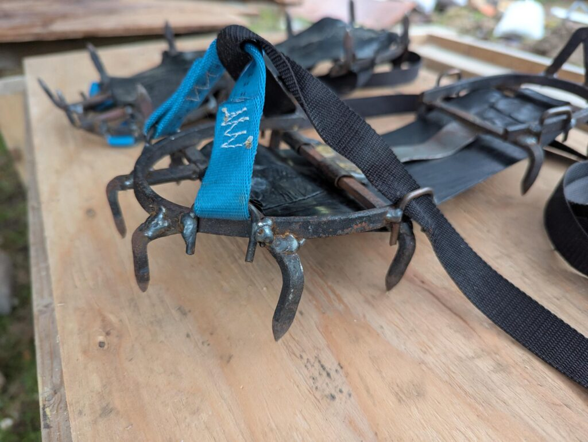
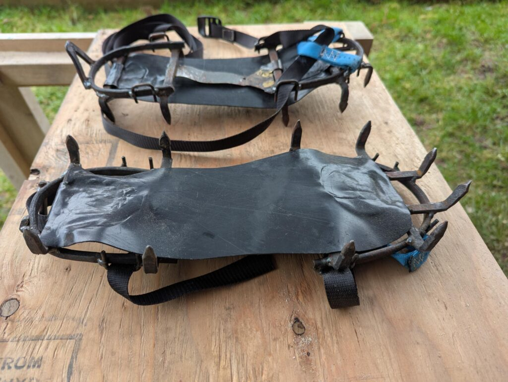

Replay: OK Stuv Crampons
Hiking in the Adirondacks of upstate NY can get icy in the winter time. Rather than huddling at home to wait out the weather, we built custom crampons. All it takes is a MIG welder, an oxy-acetylene torch, some scrap steel, webbing and basic sewing skills.


